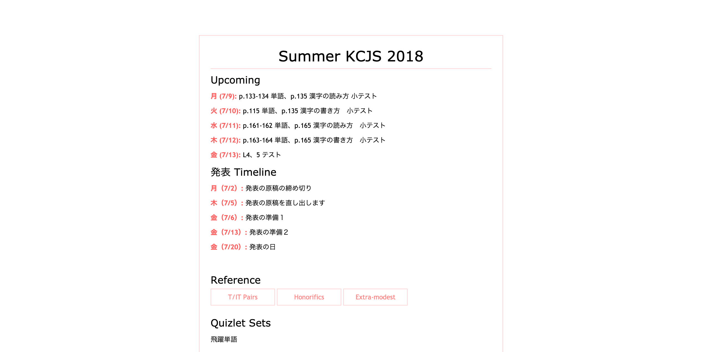
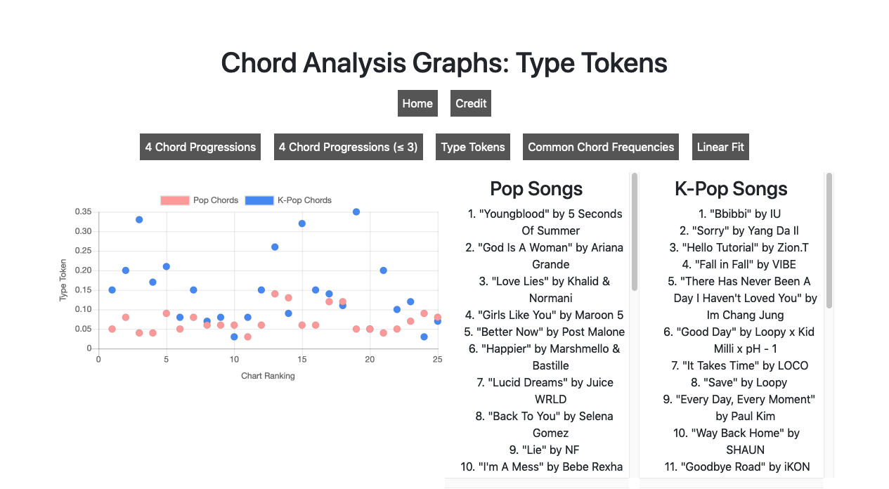
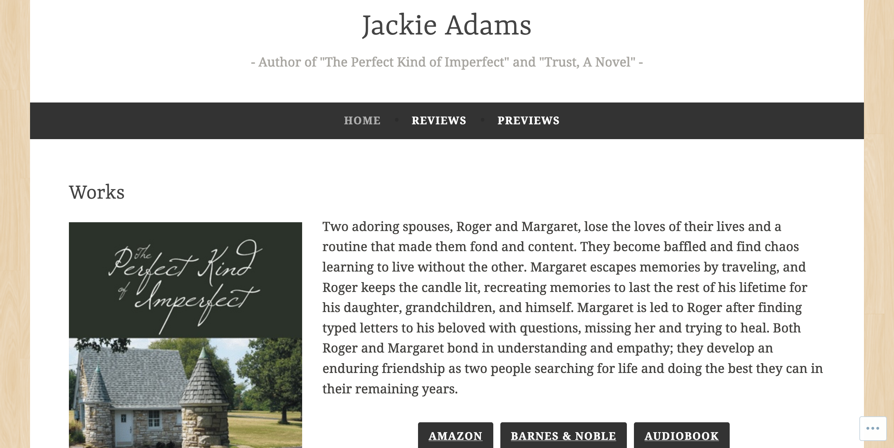

Website Design
KCJS Summer 2018
A personal website to accompany a 2018 study abroad program, consisting of an intensive modern Japanese language course at Columbia University's Kyoto Consortium for Japanese Studies.
Chords
A visual part of a final group project for Introduction to Digital Humanities exploring the chords and chord progressions of chart-topping pop and k-pop songs.
Jackie Adams
A website created and updated for author Jackie Adams.
Past Website Work
Lex Lata, Lex Ferenda; Crimes Against Humanity Initiative
My previous job in the Washington University Law School involved updating various websites on WordPress and ASP.NET content management system. Above are some of the websites which I have worked the most on. My involvement includes maintaining and updating content as requested in addition to helping transitioning sites to our new WordPress platform.
Land Use Law
From April 2018 to May 2020, I was in charge of making monthly updates to and maintaining this website.
Lunar New Year Festival, Washington Univeresity Chemistry Tournament
I perviously served as the Secretary/Webmaster and Director of Communciations for Lunar New Year Festival, which produces an annual performance to promote awareness of aspects of Asian culture and raise money for a local philanthropy organization. I also helped to update the website of Washington University Chemistry Tournament, of which I was a Co-Director.
Writing
- Articles for Student Life
Below are sample articles I wrote for from Washington University's Student-Run Newspaper, Student Life, in which I was active during my first year of university.
PR Design

A Facebook event cover for Lock and Chain's spring book sale.

A Facebook event cover for the Taiwanese Students Organization's first General Body Meeting in Spring 2020.

The cover photo for Washington University's Chinese Yoyo Club Facebook page. Image courtesy of the university's Lunar New Year Festival.